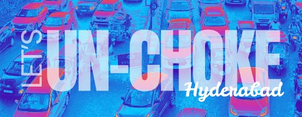

Let's Un-choke Hyderabad is a citizens' collective working towards improving mobility in the city. We have submitted a petition on quick-to-implement and high-impact traffic solutions to various departments of the government. As a next step, we are now compiling specific areas where these recommendations can be implemented.
November 2026
About two minutes. Your name is asked at the end and kept private. Answers and photos become open data.
Choose one. You can add more after sending.
Not there now?
Tap the bus stop on the map, or its card.
Tap the road on the map, or its card.
Tell us at least one thing you know about this place. Go back and change an answer.
Up to 6. Photos are public: keep faces and number plates out.
The location stored in a photo is removed.
Your contact details are stored for a while, only so we can reach you if we have questions about what you sent. They are kept private: never shown on the map or in the download.
Everything sent through this page. Free to use.
Contributors' names, emails and phone numbers are private and not in these files. What each column means